Купить продвижение в Инстаграм: сервисы + боты

- Почему важно делать продвижение всех активностей и разделов
- Разработка плана продвижения
- Сервисы и боты накрутки
- Увеличиваем актив через HypeZone
- Подписка на правильные рекомендации
- Актив через комментарии
- Масслайкинг: сработает ли
- Оценка результатов продвижения в Инстаграме*
- Как поддерживать актив
- Ответы на ваши вопросы
Развить собственную страницу в Инстаграме*, если та новая или давно заброшена – не так просто. Именно перезапуском профиля мы займемся сегодня, а также рассмотрим, как продвижение в Инстаграме* купить по небольшой цене и с минимальными затратами по времени.
Почему важно делать продвижение всех активностей и разделов
Рассмотрим теоретическую составляющую: продвижение в социальной сети предполагает увеличение активности на все разделы и категории. Как следствие – мы получаем новых подписчиков, постоянных фанатов и можем претендовать на монетизацию своего труда. Что нужно делать, чтобы продвигать страницу в Инстаграме*:
- увеличивать активность за счет комментариев;
- регулярно создавать новый контент. Больше всего привлекают внимание Reels;
- взаимодействовать с аудиторией. Обратная связь важна для построения доверия между автором и его фанатами;
- пробовать новые идеи и не бояться участвовать в трендах;
- отслеживать последние изменения в правилах и политике пользования социальной сетью.
Лайки, комментарии, сохранения и репосты – это наглядный показатель того, насколько контент интересен потенциальной аудитории. Порой, видео созданное на определенную тему, может быть порекомендовано «не тем пользователям» и вместо развития, вы получите отписки, негатив в откликах. Поэтому важно проработать контент план и определить своего «среднего подписчика» - составить примерный портрет, на кого рассчитаны публикации.
Разработка плана продвижения
Чтобы продвигать страницу в Инстаграме*, решила создать публикацию с учетом последних трендов. Это Рилс, где будет рассказано и показано как «оживлять фотографии с помощью нейросети».
 Составленный мною план продвижения включает:
Составленный мною план продвижения включает:
- Создать трендовое видео с помощью нейросети.
- Опубликовать видео и дождаться первых просмотров.
- Сделать накрутку комментариев и лайков.
- Получить актив для страницы.
Рилс на актуальную тему привлекает внимание пользователей, и они переходят в профиль. Так, на старом аккаунте получила 320 новых просмотров, с предшествующим нулевым показателем. Кроме этого, стала писать комментарии под записями со взаимной подпиской, с популярными и актуальными клипами. Это привлекает внимание потенциальной аудитории. Дополнительные методы: масслайкинг, подписка на рекомендации и хештеги, просмотры чужих Сторис.
Сервисы и боты накрутки
План SMM продвижения включает накрутку, которая возможна с помощью онлайн-ботов или сервисов. Сделала подборку актуальных сайтов, где можно заказать развитие своего аккаунта. №1 Список лучших от по рейтингу TopNakrutok Перечень сервисов и сайтов, которые помогут в накрутке активностей, продвижении ваших аккаунтов. Регулярно возвращаюсь к нему, чтобы посмотреть изменения в накрутках, найти новые функции и опции. №2 Рейтинг Ботов. С помощью рейтинга ботов вы узнаете, какие интересные инструменты есть в Телеграме. Поразительно, но с помощью мессенджера можно выполнить множество полезных задач автоматизировано. Как например: продвижение в социальных сетях. №3 Сервис HypeZone. Регулярно пользуюсь услугами HypeZone, чтобы получить качественную и быструю накрутку в социальных сетях. Отличается всевозможными параметрами для выбора аудитории, по подбору цен на продвижение и способами оплаты.
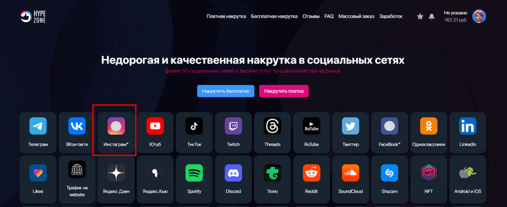
№4 Индивидуальный подбор сервиса. Настоятельно рекомендую, если вы запутались или не знаете какой сервис/бот подойдет для ваших бизнес-задач. Индивидуальный подбор выполнен в качестве теста с простыми вопросами (регистрация и авторизация не нужны). В конце вы получаете ответ с названием площадки, которая соответствует вашим предпочтениям.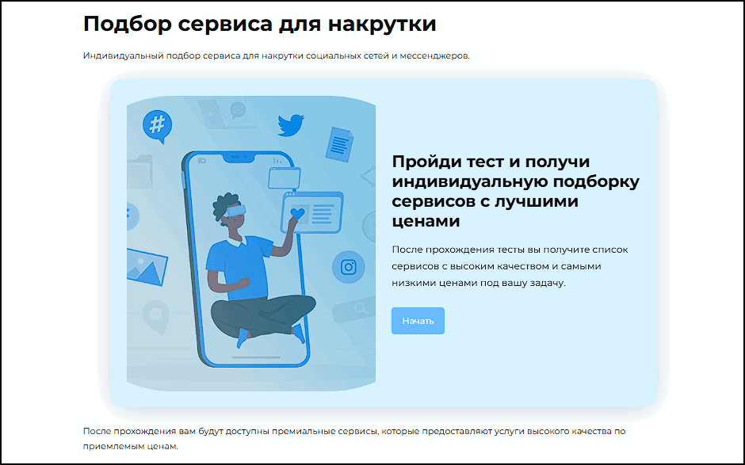
№5 Бот otec_smm_bot Бот позволяет заказать продвижение в любых социальных сетях, от ВКонтакте до Fanvue. В личном кабинете вы можете отслеживать баланс, историю заказов и управлять ими. Оформляйте несколько заявок одновременно и следите за процессом выполнения задач прямо в Telegram.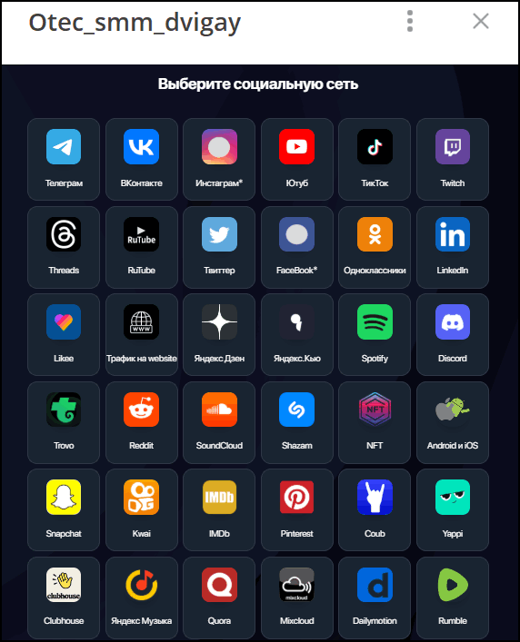
№6 Сервис TrendoWay. В сервисе TrendoWay можно продвигать страницы с нуля всего за сутки. Оплатите полный пакет раскрутки, чтобы выйти в ТОП и регулярно получать лайки, комментарии. №7 Сервис Primelike. Предлагает подписчиков нескольких категорий: премиальные, стандарт и эконом. Учитывая это, можно заказать аудиторию по своему бюджету и уровню активности в социальной сети. №8 Бот Nakrutimsmm_bot. Подходит для начинающих бизнесменов, СММ-специалистов. Отличается простым функционалом, скоростью накрутки. №9 Бот накрутки. С его помощью просто накручивать лайки и комментарии. Невысокие цены в сравнении с достойным качеством услуг. №10 Сервис smmcode. Можно оформить услуги без регистрации, впервые опробовав сервис. На указанный адрес электронной почты придет уведомление с чеком. №11 Бот soc_rakrutka_bot. Старт задачи – за 10 минут с оформления. Низкие цены за один лайк или подписчики выделяют сервис среди остальных. №12 Бот boost_socialnetworks_bot. Включает в услуги бесплатную накрутку для стримеров. Есть отдельные услуги для работы в Инстаграме*: раз в полчаса можно получить подписчиков, лайки и просмотры. №13 Бот profvishenie_bot. Чтобы оплатить услуги, нужно пополнить баланс с помощью бота. Управление заказами удобно расположено в личном кабинете, который указан в основном меню. Поэтому для накрутки не придется покидать мессенджер. №14 Бот nakrutkinis_bot. Большой ассортимент услуг – любые социальные сети и мессенджеры. Клиентам предложена тестовая накрутка: бесплатные подписчики раз в полчаса. №15 Бот nakrutilitop_bot. С помощью бота можно добавить живую и активную аудиторию в социальные сети. Между оформлением заказа и его выполнением пройдет чуть меньше 15 минут. №16 Бот tg_best_nakrutka_bot. Цена за услугу начинается от 0,1 рубля и это за 10 действий. При оформлении можно выбирать откуда будет аудитория, посмотреть гарантии и скорость. №17 Сервис smmprime. На главной сайта удобно расположился калькулятор, используя который, вы сможете рассчитать конечную цену услуг. При оформлении первого заказа предложены дополнительные бонусы: 10 подписчиков, лайков и 100 просмотров.Увеличиваем актив через HypeZone
В качестве способа продвижения выбрала сервис накрутки HypeZone. Давно им пользуюсь и он ни разу не подводил, если дело касалось увеличения актива на странице. Купить продвижение в Инстаграме* в России через HypeZone проще всего и удобнее, чем на других площадках. Сервис отличает:
- возможность оплачивать услуги банковской картой стандарта МИР и криптокошельками;
- разнообразие социальных сетей и сайтов, на которые можно заказать накрутку;
- наличие реферальной программы;
- бесплатные тестовые услуги: получить 10 подписчиков, лайков или комментариев.
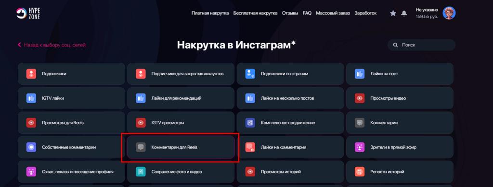
В моем случае - старый аккаунт, у которого такие исходные данные:- 312 просмотра на странице за последние 30 дней.
- 120 зрителей на последнем Рилс;
- один комментарий;
- 162 подписчика.
Аккаунт недавно был восстановлен, поэтому активностей немного. С помощью HypeZone планирую повышать число взаимодействий с последней публикацией и дополнительно следить за количеством подписчиков.
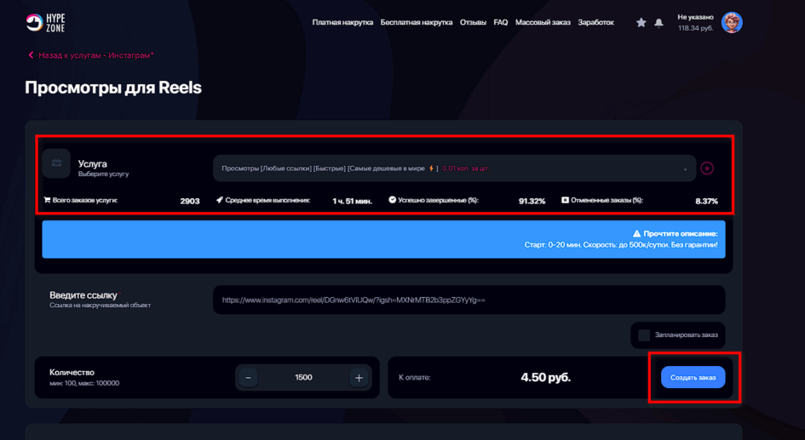
Был создан Рилс по актуальной теме, на который поставила накрутку:- 1500 просмотров;
- 25 комментариев;
- 150 лайков.
В HypeZone скорость накрутки равна 10 минутам, в течение которых будут добавлены все виды активностей. Затраченный бюджет на оформление услуг – 100 рублей.
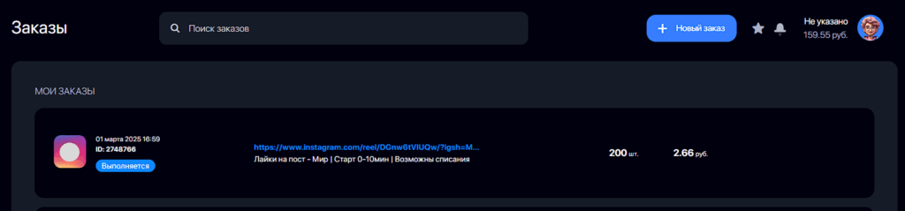
Оформляя заказ, слежу за лимитами: для профилей, где давно не было актива, нужно устанавливать ограничения, чтобы избежать блокировки. Также, в сервисе есть перерывы, которые дополнительно защищают мою страницу от вероятности оказаться в «теневом бане».Подписка на правильные рекомендации
Еще один пункт в моем плане – подписаться на аккаунты, которые похожи по стилю и тематике. Задействую фишку Инстаграма* с подпиской по хештегам: #продвижение, #новыефункции и #хочуактив, #тренды2025. Даю краткую инструкцию, если вы не знаете как подписаться на теги:
- Открываем раздел «Поиск».
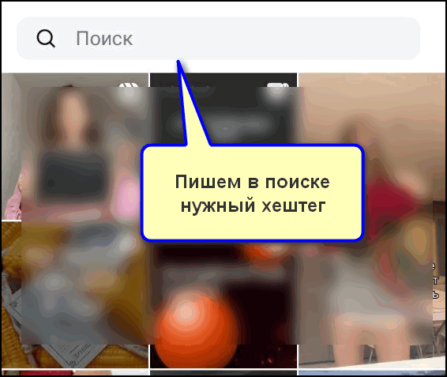
- Пишем тему, которая нам интересна.
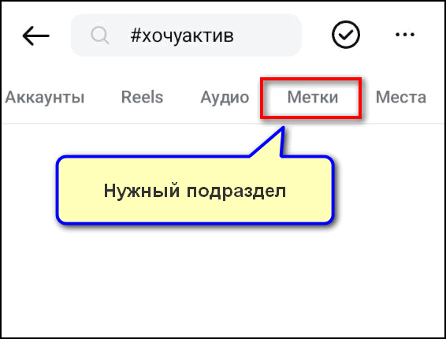
- Переходим в подменю: «Метки».
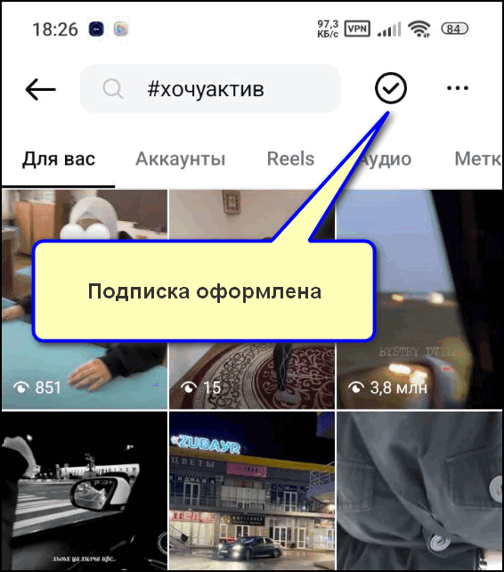
- Нажимаем по значку «+» сверху.
Появится небольшое уведомление, что была оформлена подписка. Теперь вы будете получать рекомендации, основанные на этом теге. То же касается и с подпиской на конкурентов: ставьте лайки, оставляйте комментарии и свободно подписывайтесь. Таким образом вы будете первыми, кто узнает о новых и интересных постах конкурентов, сможете проанализировать их и воспользоваться некоторыми идеями при составлении личного контент-плана.
Актив через комментарии
Комментарии также оставляю под публикациями, которые опубликованы по интересующей мне теме. Обращаюсь к поиску и ищу записи, где предложено взаимно увеличить актив. Под такими постами собираются блогеры с небольшим числом подписчиков, которые ищут аудиторию среди таких же авторов. Взаимная подписка в этом случае не предвещает постоянного актива и полезных взаимодействий, зато повышают количество фанатов в профиле. Что также отражается на формировании доверия среди постоянных подписчиков.
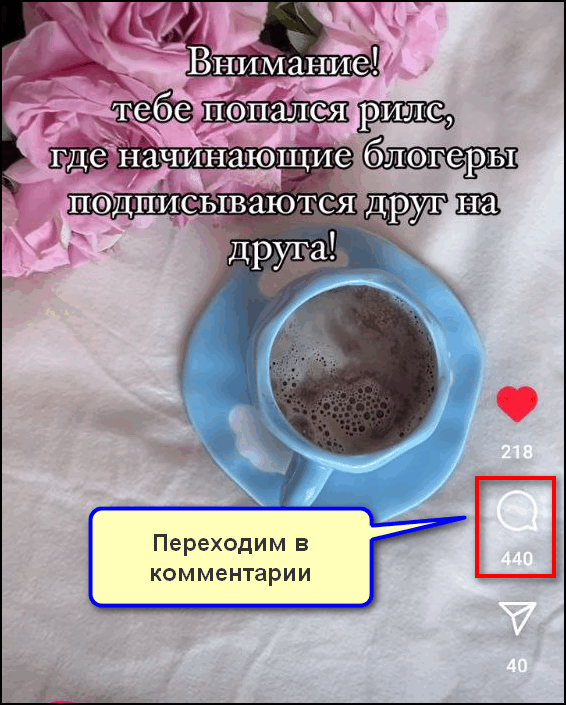
То есть, рост и актив в профиле – благоприятная почва для дальнейшего развития аккаунта. Пользователи, которые впервые оказались в вашем блоге, завидев постоянно растущее число подписчиков, комментариев, будут охотнее подписываться.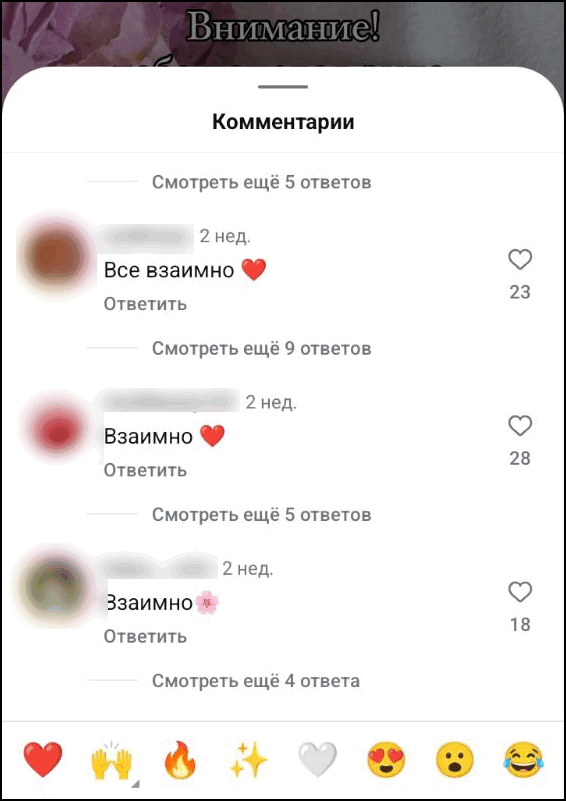
Это называется «эффект первого комментария»: именно он становится катализатором для обсуждения, задает общее настроение. Применимо не только в отношении откликов, но и других видов активностей.
Масслайкинг: сработает ли
Еще один вариант, как набрать подписчиков – воспользоваться масслайкингом и просмотром Историй. Провела небольшой эксперимент:
| Число просмотренных страниц: | Действия: | Результат: |
| Первый день: 20 | Лайки на публикации, Истории | Без взаимной реакции |
| Второй день 50 | Просмотры Историй, комментарии под постами | 2-3 взаимных просмотра Историй |
| Третий день: 50 | Истории, комментарии, лайки на публикации | Пара лайков на посты, 5 зрителей для Сторис |
Масслайкинг и масслукинг – полезная, дополнительная мера, которая поможет вам в поиске интересных аккаунтов.
Мною были выбраны аккаунты, которые нашла по хештегам и под записями, где были предложены взаимные подписки. При выборе таких записей нужно обращать внимание на давность размещения: нередко публикации, размещенные более месяца назад, попадают в текущие рекомендации. На основании мини-эксперемента делаю вывод, что массовый просмотр записей потенциальной аудитории помогает, но если расширить выборку. Допустим: от 100-150 аккаунтов, если у вас небольшой блог и до 1000 если подписчиков более 5000. Рекомендую для этого способа собирать базу по фанатам своих конкурентам и в соответствии с интересами по тегам, геолокации.
Оценка результатов продвижения в Инстаграме*
Продвижение одной публикации дало положительные результаты, которые были отражены в статистике. Стало:
- 3,8 тыс. просмотров профиля с 73;
- 26 комментариев на основную публикацию и 3 на другие;
- зрители для Историй;
- 10 новых подписчиков.
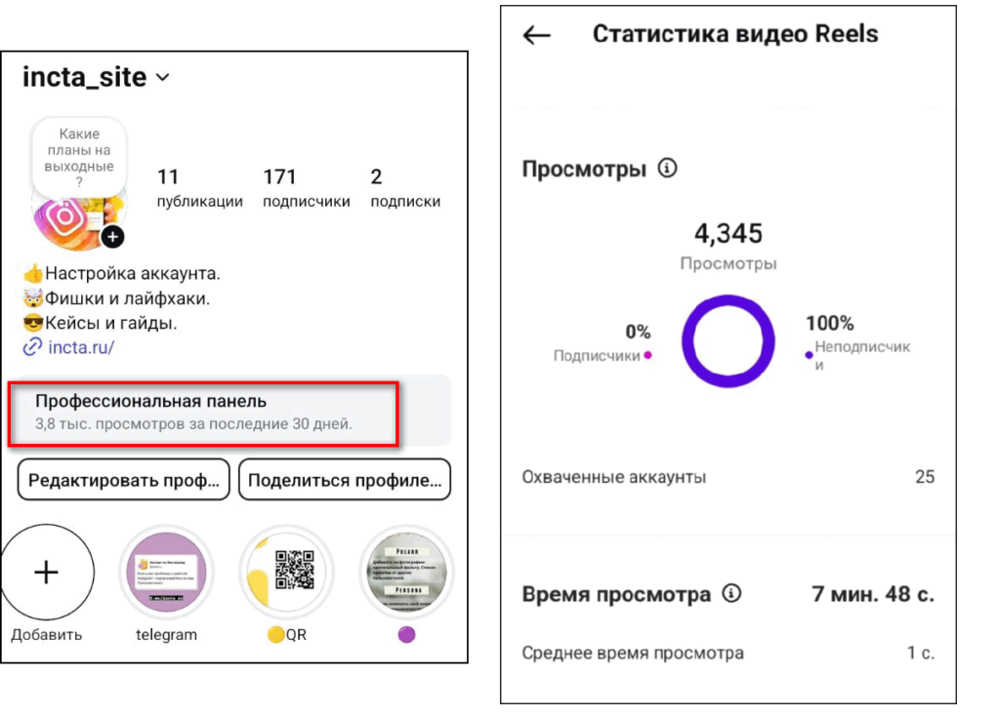
Для публикации, которая была создана:- с 1500 заказанных просмотров получили еще 3000 с вывода в рекомендации;
- с 25 накрученных комментариев + 3 дополнительных.
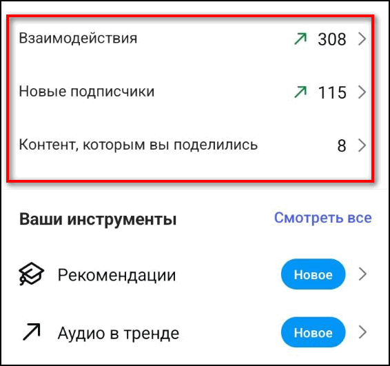
За ограниченный срок в 3 суток получила значительный прирост в просмотрах аккаунта. С лимитами и «теневым баном» не столкнулась, потому что комбинировала разные варианты получения активности.
Аккаунт буду продвигать в дальнейшем, как и использовать накрутку для лайков и комментариев. Потому что это приносит не только оплаченную аудиторию, а и новых подписчиков, которые реально заинтересованы в контенте.
Как поддерживать актив
Кроме накрутки, отметила другие способы, повлиявшие на развитие аккаунта:
- план SMM продвижения. Правильно поставленные задачи показывают, где были допущены ошибки, в каком направлении нужно двигаться;
- комментарии под определенными постами;
- просмотр Историй и отметки «Мне нравится».
Чтобы поддерживать актив в своем профиле, вам нужно регулярно искать новых подписчиков через публикации, создавать контент на трендовые темы и поддерживать обратную связь. Все это вам необходимо до того момента, пока не появится активная и постоянная аудитория. Не забывайте, что у вас должна быть личная «фишка»: то, что привлекает подписчиков и выделяет аккаунт среди конкурентов. Допустим: вы размещаете развлекательные Рилс с процессом работы, а на фоне рассказываете интересную историю. Это то, что выделит вас среди остальных. Выберите время и дни, когда будете делиться новыми постами. Этому примерному графику также станут придерживаться ваши подписчики, в ожидании новых публикаций.
Ответы на ваши вопросы
Как часто можно пользоваться накруткой? - Учитывайте лимиты социальных сетей по количеству действий. Например, для недавно зарегистрированной страницы: не более 5000 просмотров для аккаунта, меньше 2000 для новых публикаций. Не будет ли накрутка негативно влиять на статистику? - Чтобы накрутка не была видна при аналитике страницы, вам стоит комбинировать несколько видов продвижения. Размещайте регулярно публикации, используйте масслайкинг и масслукинг, чтобы привлекать внимание потенциальной аудитории. Отпишутся ли накрученные подписчики? - В сервисе HypeZone есть гарантии: в течение 30 дней подписчики останутся на странице. Лайки и комментарии не будут удалены авторами, а также платформа гарантирует что отклики будут позитивными.